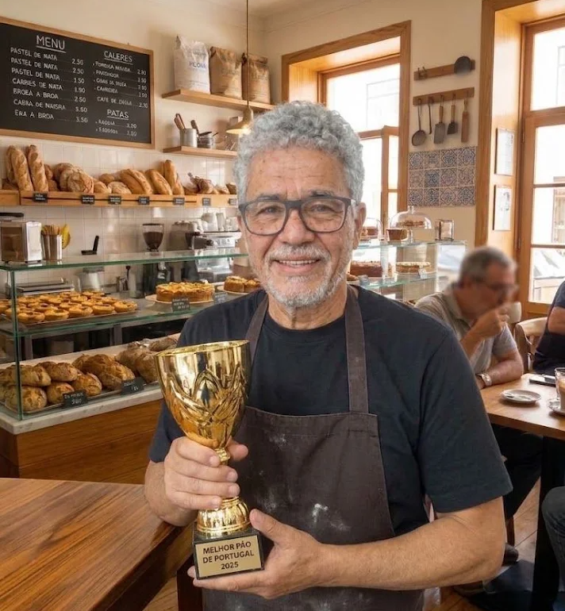
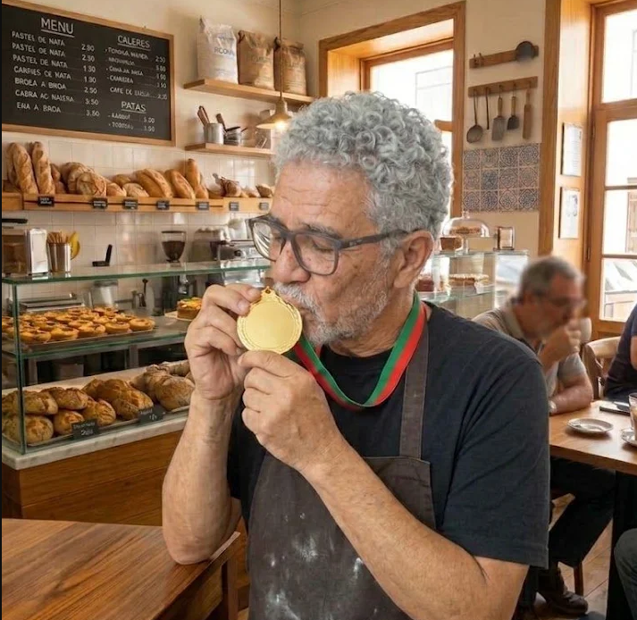
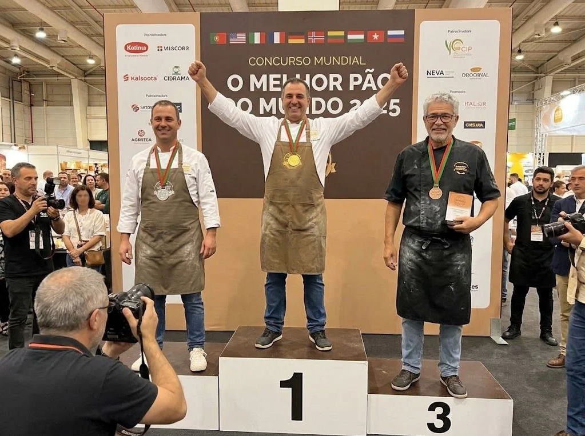
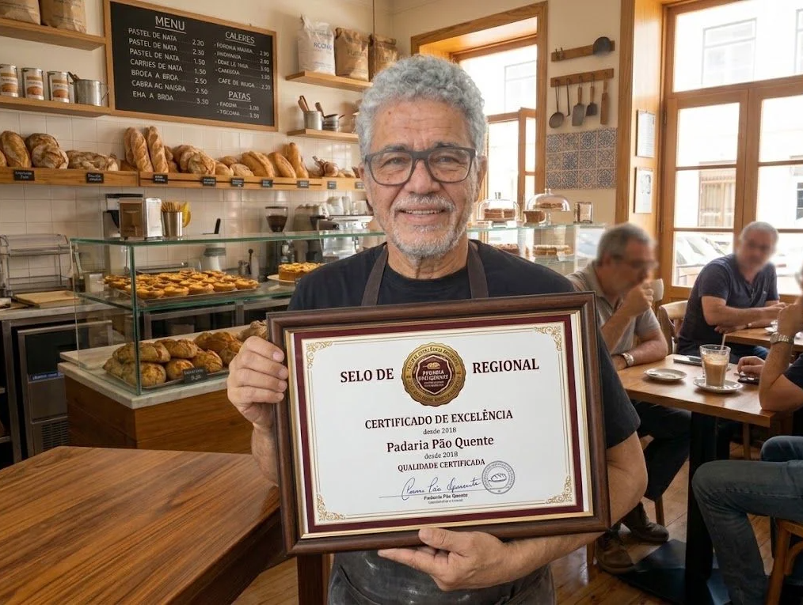

O Melhor Pão de Portugal (2025)
1.º Lugar — Categoria Trigo Tradicional
Distinção atribuída pela ACIP e pelo Museu do Pão (Seia), após prova cega realizada por um júri de 27 mestres padeiros e chefs nacionais. O nosso Pão Caseiro Tradicional destacou-se pela crosta estaladiça, aroma a forno de lenha e fermentação lenta.

Medalha de Ouro — Concurso Nacional de Pão Tradicional (2024)
Distinção "Melhor dos Melhores" — Broa de Milho
Conquistada no Concurso Nacional de Pão Tradicional Português (CNEMA, Santarém), promovido pela Qualifica/oriGIn Portugal. A nossa broa de milho moído em mó de pedra recebeu a pontuação máxima em sabor e textura.

Finalista Mundial — Pão Biológico e Nutricional (2023)
Top 3 Mundial — Campeonato Internacional de Panificação
Representando a panificação artesanal portuguesa na Itália, o nosso Pão Integral com Sementes alcançou o pódio mundial pela utilização exclusiva de farinhas de cereais antigos e massa-mãe com mais de 40 anos.

Selo de Excelência Regional (Desde 2018)
Património Gastronómico e Tradição Familiar
Reconhecimento contínuo pelo contributo histórico da Padaria Pão Quente desde a sua fundação por Marco Aurélio em 1976, mantendo vivos os métodos artesanais de amassadura manual e cozedura tradicional.